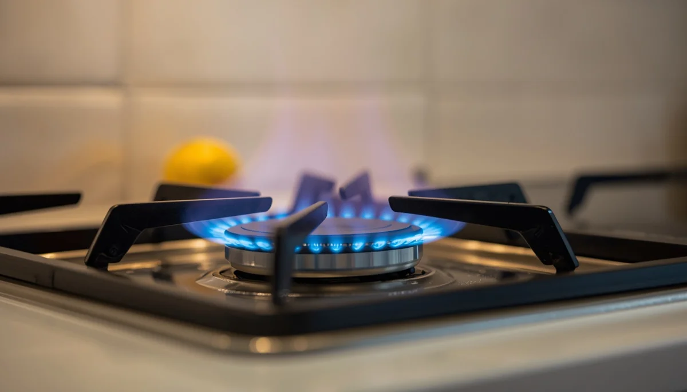

Prevención de quemaduras en la cocina
La cocina es uno de los espacios del hogar que concentra mayor número de riesgos térmicos para la infancia. La presencia de líquidos hirviendo, superficies incandescentes y recipientes en el fuego exige la adopción de medidas preventivas estrictas para evitar accidentes graves durante las tareas cotidianas.
Control de mangos, fuegos y recipientes
Una de las precauciones más eficaces consiste en orientar siempre los mangos de sartenes y cazos hacia el interior de la placa de cocción, evitando que sobresalgan y puedan ser alcanzados o tirados accidentalmente por los menores. Asimismo, utilizar los fogones traseros siempre que sea posible reduce notablemente la exposición directa.
Precaución con líquidos calientes y electrodomésticos
Evitar dejar tazas con bebidas calientes cerca de los bordes de mesas o encimeras, y supervisar el uso de hornos, microondas y planchas ayuda a prevenir lesiones cutáneas de diversa consideración en los primeros años de vida.
"Pequeños gestos preventivos en la cocina, como vigilar la orientación de los recipientes, eliminan gran parte de los riesgos de quemaduras infantiles."
Fomentar rutinas seguras en las tareas del hogar
Establecer normas claras de seguridad en torno a las zonas de calor permite cocinar con tranquilidad, integrando la prevención como un hábito natural de convivencia familiar.
➔ Volver al índice de Prevención de Accidentes